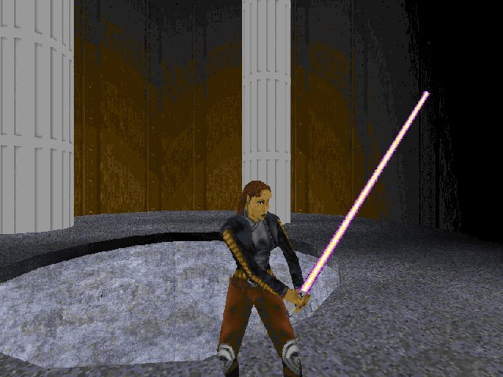
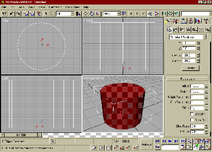

Note: For this tutorial I have 'map rotation', under Jed's options set to 'Old Style', cause that's just the kinda person I am. You may also want to read this entire article before you try creating your own round sector.Round Rooms....
By Gary MacDonald
So...you'd like to be able to make a circular sector with Jed. Well, it can be done, but it may take a few tries to get it right. We are lucky that Jed provides us with some basic shapes ( in this case the octagon ) that we can modify and detail to help produce a more complex looking level. Before we dive in head first let's spend just a bit of time examining the subject.
Polygon:
If your first thought is "Who is Polly, and where did she go?", you should read this next bit. It's very easy to see that any surface in Jed is made up of a combination of lines. The surfaces these lines create are known as polygons. Polygons are the basis of all 3D computer modeling and help define the physical element of a 3D game ( the player models, the levels, weapons, etc...). When you look at an object in a game that appears to be somewhat round, it is actually just a combination of many small, straight lines, and the resulting surfaces can produce the illusion of a round object or sector. The big problem here is that the more lines your CPU has to process the slower the overall drawing or rendering time will be for that surface. The gang at LucasArts limit most round objects to a maximum of 16 sides for this reason. As computers grow more powerful, and 3D accelerated graphics become the norm rather than the exception, you can expect to see more complex objects in games. Until that time we'll stick to the 16 side maximum to make our levels less laggy and our CPUs more happy
Jed issues:
If you have never tried to make a new sector using the Shapes tab in the Map Settings window now would be a good time to start. Click the Shapes tab and select Octagon from the drop down list. Then position the mouse pointer on the grid and click while holding down the 'K' key. Before you do anything else, make sure you are in sector mode and hold down the left mouse button while dragging away from your new shape. "What is that funny line coming from my shiny new octagon!!?" you say? Well...it's a very powerful tool that we can use to create an octagonal shape of almost any size we want. You can create a new octagon by dragging this line to the desired length. Try it out a few times with the different default shapes to get the hang of it.
-Moving the grid: It is also a good idea to get used to the idea of moving the grid to line it up with whatever geometry you happen to be working on. Hold down the 'G' key and slide the mouse around using very small movements. Because of the nature of the octagon we will have to move the grid around a bit to get 'The Perfect Cleave'. You will soon see what I mean by this but first try lining the grid up with different surfaces to get the feel for the technique.
O.K., Now that we have all the basics out of the way it's time to take a whack at what will eventually be a room with 16 walls. The floor and ceiling will remain as is, making it easier to connect your sectors together.
Start a new project in Jed and go to the Shapes tab in the Map Settings window. Select octagon from the drop down list and click on a spot on the grid while holding down the 'K' key. Make sure your Snap to: setting is at 0.2, this will make it easier to create a reasonably sized sector for us to work on. While in sector mode, hold down the left mouse button and drag across the grid, to the left, exactly 2 grid squares.
You now have a new octagonal sector that we will use as the basis for this tutorial. You can delete the first, smaller octagonal sector you created and delete the default sector that Jed starts us off with. Now move the new sector into place so that Kyle is in the center of it. Here's a top down view of what we want.
Our next step is to cleave each face or wall down the exact center. Before we attempt this you should know that the north,south,east and west walls will be easy cleaves but in order to cleave the other 4 walls we will have to do a bit of grid moving. This is because the other 4 walls do not line up exactly with the grid, even when you snap them to it.
Switch to surface mode and select the north wall in the top-down view. Snap it to the grid by holding down the shift key and hitting the number 2. This will change our perspective on the surface and we can now cleave it down the center along the grid dots.
Hit the number 1 key to switch back to top-down view and select the south wall. Now hit shift and 2 again to change to the face-on perspective we use for cleaving and cleave this wall down the center in the same manner as the last. You can continue to cleave the east and west walls in this way, but you will have to hit shift +3 to get the proper perspective.
4 down and 4 to go:
The remaining four wall surfaces will require at bit more work. Switch to top-down perspective by hitting 1 again, and select any of the remaining uncleaved walls. It doesn't matter if you hit shift +2 or shift +3 now, we will still have to rotate the grid using shift+page up or shift+page down in order to get the correct perspective. Line the selected surface up so that you are looking at it, dead center or front view.
At this point it looks like an easy cleave but if you try to cleave it now, nothing will happen. You must first hit shift+S to snap the surface to the grid. Now you can see that the surface is no longer lined up with the grid, so we will have to move the grid a bit to get it lined up.
Before we try this, go to map setting and change the Dot Every value to 0.1. This will help us to place the grid more accurately. Hold down the G key and slide the grid using small mouse movements until it looks like the odd space on each side has been evenly distributed. Use all the lines and dots on the grid to help you position it so that you have one line that goes down the exact center of the surface. Take a look at this image and you will be able to see what we are aiming for.
As you can see from the image, my surface is now in a good position for me to cleave a line down the exact center. Cleave it and then move on to the remaining 3 walls, snapping them to the grid, and moving the grid into the cleaving position until you have finished all the surfaces. Here is an image of the sector with each surface cleaved.
Now we will have to switch to Vertex mode to actually give the cleaved sector a round appearance. At the point where you cleaved each of the surfaces there are now new vertices for us to pull out. Before we move things around go back to the map settings window and change the snap every: value to 0.1, if you were working on a smaller sized sector, you would have to adjust the value to a smaller number so that you don't end up pulling the vertices out too far.
Select surface mode and switch to the top-down view of the sector. Snap the bottom of the sector to the grid and switch to vertex mode. We are going to work on each surface in the same order as we did while cleaving. Select the vertice in the center of the north wall,snap it to the grid, then click on the multiselection tool at the bottom of the screen until it is a + sign. Now hold down the Alt key and draw a box around the selected vertex. This selects the other vertex directly below the first, so that both will move when we position them. Here's an image for reference.
Hold down the Ctrl key and the left mouse button and move the selected vertices up slightly until they snap into the next closest grid position. Here's another image for reference.
You can now click on the multiselection tool once to turn it into a -(minus) sign and then draw a box around the selected vertices. Now you can move on and apply the same method to the east, south, and west walls. Here's yet another image to show the result.
This has produced an interesting shape, and you may want to use it for level geometry or a custom 3do at some point as well, but for this tutorial, we are going to continue and pull out our remaining 4 sets of vertices. Depending on the size of the sector you are working on, this is the point where you may want to change your snap to: value in map settings again to half the value it is now. So go ahead and change it from 0.1 to 0.05.
Using the same method, highlight and then multiselect the vertices you want to pull, snap them to the grid and then move them out to the next closest grid position. If you end up moving them too far, go back to the snap to:0.1 value and move them back to their original position, then try again. Here's my finished sector.
This is about as close to round as you really want to get, unless you want to spend even more time adjusting the vertex pairs. It may have taken a while to complete the tutorial but now that you have done it once, it will soon become a breeze and take you very little time to do.
Here's an image of Mara in her shiny new round room!!

TIPS:
-Before you do any cleaving at all, pick a side of the octagon that you want to attach to other geometry in your level and cut out a spot for a door. You will then have an easier time when it comes to integrating the shaped sector into your level.
-If you view the default Jed sector from it's side and create your round sector from the side, you can easily make it into a pipe or an entire pipeline.
- Setting the snap to: value to a lower number will often produce a 'more round' room but also leaves more room for error.
- I have included my .Jed file with this tutorial, check out the little water pool, it's done with freehand cleaving, with the snap to: value on it's smallest setting. First make a round sector to use as a template, snap it to the floor and cleave around it, then delete the template sector and extrude your new circular surface.
- This is only one way of doing it, and it works for me, but try experimenting to see if you can come up with your own way , you may surprise yourself!
- Is this the way the guys at LucasArts make these sectors and shapes? Well...not exactly... because they use advanced and incredibly expensive software, they can create a similar 16 sided sector or 3do in about 2 seconds. They simply pick the shape they want to work on (known as a 'primitive' - just means a basic shape), which in this case would be a cylinder, and enter the number of sides they want it to have. Here are a few bonus shots from 3D Studio Max( a premier modeling and computer animation package) to give you an idea of how the big guys do it. Take Care and happy cleaving!
In MAX:
-select the shape you want
-enter a radius and height
-select the number of sides you want your shape to have.
-click on the Image below for the full screen shot.

© 1998 Gary MacDonald and The Massassi Temple.


{kind=link}
{kind=link}